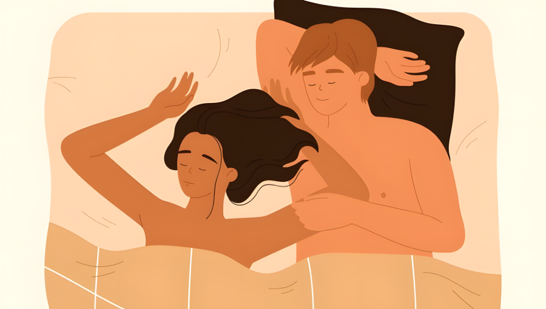
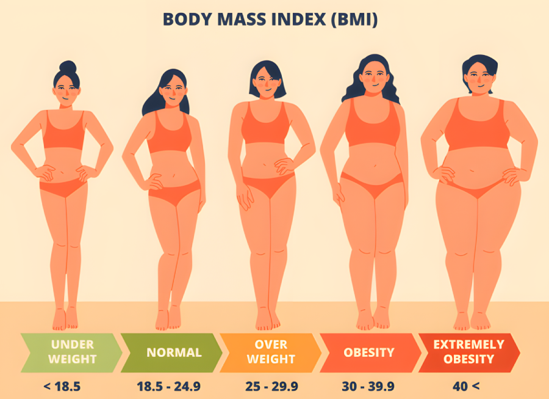
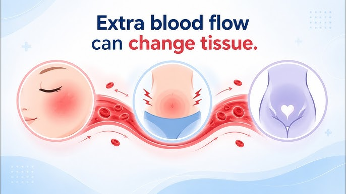
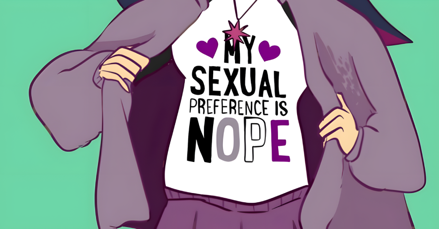

Sexual Attraction, Arousal, and Response
What pulls two people together, and what happens in the body when desire takes hold?

Think about the last person you felt drawn to. Now try to explain why. You will probably reach for the obvious answers. They were good-looking. They were funny. They were your type. But some of the strongest pulls of attraction come from things you've likely never considered.
You are drawn to people who feel familiar, even when you have only seen them in passing (Reis et al., 2011; Bornstein, 1989)ReferenceReis, H. T., Maniaci, M. R., Caprariello, P. A., Eastwick, P. W., & Finkel, E. J. (2011). Familiarity does indeed promote attraction in live interaction. Journal of Personality and Social Psychology, 101(3), 557–570. | Bornstein, R. F. (1989). Exposure and affect: Overview and meta-analysis of research, 1968–1987. Psychological Bulletin, 106(2), 265–289.. Your brain quickly registers the size of other people's pupils, which can signal mutual attraction (Lick et al., 2016)ReferenceLick, D. J., Cortland, C. I., & Johnson, K. L. (2016). The pupils are the windows to sexuality: Pupil dilation as a visual cue to others' sexual interest. Evolution and Human Behavior, 37(2), 117–124.. Your nose may be quietly screening potential partners for pheromone signatures of their immune systems (Wedekind et al., 1995)ReferenceWedekind, C., Seebeck, T., Bettens, F., & Paepke, A. J. (1995). MHC-dependent mate preferences in humans. Proceedings of the Royal Society of London. Series B: Biological Sciences, 260(1359), 245–249.. All of these processes happen automatically. Much of it never even reaches your conscious awareness.
Most aspects of attraction don't fit neatly on a dating profile. Apps are very good at showing you a face and a list of hobbies. But they cannot transmit how someone smells, the sound of their voice, the timing of a shared laugh, or what happens to their pupils when you walk into the room. These are the in-the-moment, face-to-face signals that create the true "magic" of attraction. Some researchers argue this is why so many promising matches on dating apps fall flat when meeting someone for the first time in person (Finkel et al., 2012; Joel et al., 2017)ReferenceFinkel, E. J., Eastwick, P. W., Karney, B. R., Reis, H. T., & Sprecher, S. (2012). Online dating: A critical analysis from the perspective of psychological science. Psychological Science in the Public Interest, 13(1), 3–66. | Joel, S., Eastwick, P. W., & Finkel, E. J. (2017). Is romantic desire predictable? Machine learning applied to initial romantic attraction. Psychological Science, 28(10), 1478–1489.. The "chemistry" of attraction cannot be replicated on your phone.
8.1 What Draws Us Together?
The saying that "beauty is in the eye of the beholder" suggests that attraction is purely personal. What one person finds gorgeous, another might see as completely unattractive. However, this isn't how attraction works in real life. Across cultures, people tend to agree more than you might expect on what looks attractive. Researchers have traced many of these preferences to our shared evolutionary roots. We seem to be tuned in to cues that signal health and fertility, often without knowing it.
Reading the Face
Faces carry a lot of information, and we process much of it in a tiny fraction of a second (as little as 0.03 seconds!). One factor is masculinity and femininity. Estrogen limits bone growth in the lower face and brow, which tends to give women smaller chins and larger-looking eyes. Testosterone does the opposite, building a heavier jaw, chin, and brow. On average, people rate more feminine faces as attractive on women and more masculine faces as attractive on men, and this preference shows up across most cultures (Penton-Voak & Perrett, 2000)ReferencePenton-Voak, I. S., & Perrett, D. I. (2000). Female preference for male faces changes cyclically. Evolution and Human Behavior, 21(1), 39–48.. When researchers use software to generate faces, the most feminine female faces are rated most attractive, but the most attractive male faces sit a few notches below hyper-masculine. Extremely masculine faces start to read as threatening, which works against their attractiveness.

Symmetry is a major factor in facial attractiveness. Most faces have small asymmetries that we notice only subconsciously. The more symmetrical a face is, the more attractive we tend to rate it (Jones et al., 2001)ReferenceJones, B. C., Little, A. C., Penton-Voak, I. S., Tiddeman, B. P., Burt, D. M., & Perrett, D. I. (2001). Facial symmetry and judgements of apparent health. Evolution and Human Behavior, 22(6), 417–429.. Why would that be? One possibility is that symmetry signals good gene expression and robust health during development. When our faces and bodies develop in the womb and during puberty, asymmetries can result from momentary lapses in nutrition and health. If one of your ears is larger than the other, it may mean that your mom wasn't in top physical health while you were forming those ears. A perfectly symmetrical body implies a well-developed body, which is a useful indicator for a person's general health and fertility. It may also be that asymmetrical faces are simply harder for our brains to process, which makes them literally harder to look at (Khazan, 2014)ReferenceKhazan, O. (2014, August 10). There's more to life than facial symmetry. The Atlantic..


Another factor is neonatal featuresneonatal featuresChildlike facial proportions, such as large eyes and rounded cheeks, that adults can retain; also called "babyfaced" features.View in glossary →, often referred to as "babyfaced" features. Using computer-generated faces, researchers find that we are drawn to slightly childlike proportions in women: larger eyes, rounder cheeks. One idea is that we transfer our warm feelings toward children onto adults who share those features, creating a desire to nurture and protect them. This effect depends on context. People tend to favor baby-faced female political candidates but not male ones, and baby-faced male doctors but not female ones (Lee, 2013)ReferenceLee, Y.-K. (2013). Babyfacedness, sex of face stimulus, and social context in face perception and person evaluation. Psychological Reports, 112(3), 800–817.. Perhaps we look at neonatal features and infer "warm" qualities, like empathy, kindness, and trustworthiness, which we typically want in women and male doctors.
A designer uses software to morph one male face along a range from very feminine to extremely masculine, then asks people to rate each version. Which version is most likely to receive the highest attractiveness ratings?
Reading the Body
The body signals attraction as well. One of the most studied signals is the waist-to-hip ratiowaist-to-hip ratioThe circumference of the waist divided by that of the hips. In women, a ratio around 0.7 is rated most attractive by men around the world.. In women, a ratio around 0.7, meaning the waist is 70% of the circumference of the hips and bust, is rated most attractive by men around the world (Singh, 1993)ReferenceSingh, D. (1993). Adaptive significance of female physical attractiveness: Role of waist-to-hip ratio. Journal of Personality and Social Psychology, 65(2), 293–307.. When researchers analyzed the measurements of Playboy models and Miss America contestants, most landed near that exact ratio, and the same 0.7 preference shows up when lesbian women rate other women (Cohen & Tannenbaum, 2001)ReferenceCohen, A. B., & Tannenbaum, I. J. (2001). Lesbian and bisexual women's judgments of the attractiveness of different body types. Journal of Sex Research, 38(3), 226–232.. For men, broad shoulders matter more, which is driven primarily by testosterone. The common thread is that fat distribution is shaped by sex hormones, which in turn track fertility and health.

When it comes to a person's weight and body mass, culture plays a larger role in what people find attractive. When men in Western cultures rate bodies shown without faces, they tend to prefer women with a body mass index (BMI) between about 18 and 22, which is thinner than the average of 29 BMI for women in the U.S. But this "ideal body" shifts with time and place. In the 17th century, fuller bodies signaled wealth, health, and happiness. In parts of the world where food is scarce, fuller figures are still preferred. One study followed Zulu men who had moved from South Africa to Britain. At home they preferred women with a higher body mass. After eighteen months in Britain, their preferences had shifted toward thinner female bodies (Tovée et al., 2006)ReferenceTovée, M. J., Swami, V., Furnham, A., & Mangalparsad, R. (2006). Changing perceptions of attractiveness as observers are exposed to a different culture. Evolution and Human Behavior, 27(6), 443–456..

Beyond the Visual
Attraction is not only about what we see. Voice matters too. In general, men prefer somewhat higher-pitched women's voices, and women prefer somewhat lower-pitched men's voices, partly because pitch signals our hormones (Apicella & Feinberg, 2009; Feinberg et al., 2005)ReferenceApicella, C. L., & Feinberg, D. R. (2009). Voice pitch alters mate-choice-relevant perception in hunter-gatherers. Proceedings of the Royal Society B: Biological Sciences, 276(1659), 1077–1082. | Feinberg, D. R., Jones, B. C., Little, A. C., Burt, D. M., & Perrett, D. I. (2005). Manipulations of fundamental and formant frequencies influence the attractiveness of human male voices. Animal Behaviour, 69(3), 561–568.. Testosterone causes the vocal cords to thicken during development, resulting in a deeper, steadier vocal tone (Puts et al., 2006)ReferencePuts, D. A., Gaulin, S. J. C., & Verdolini, K. (2006). Dominance and the evolution of sexual dimorphism in human voice pitch. Evolution and Human Behavior, 27(4), 283–296.. In one clever study, when women believed they were leaving a voice message for an attractive man, they unconsciously raised the pitch of their voices (Fraccaro et al., 2011)ReferenceFraccaro, P. J., Jones, B. C., Vukovic, J., Smith, F. G., Watkins, C. D., Feinberg, D. R., Little, A. C., & DeBruine, L. M. (2011). Experimental evidence that women speak in a higher voice pitch to men they find attractive. Journal of Evolutionary Psychology, 9(1), 57–67.. Subtly shifting one's vocal pitch up or down is one way we flirt with the opposite sex.
If the eyes are the window to the soul, they may also give away our deepest desires. When you're looking at someone you find particularly attractive, your pupils will dilate, doing all they can to take in their visual image (Rieger & Savin-Williams, 2012)ReferenceRieger, G., & Savin-Williams, R. C. (2012). The eyes have it: Sex and sexual orientation differences in pupil dilation patterns. PLoS ONE, 7(8), e40256.. This may be why we find faces more attractive when they display dilated pupils (Lick et al., 2016)ReferenceLick, D. J., Cortland, C. I., & Johnson, K. L. (2016). The pupils are the windows to sexuality: Pupil dilation as a visual cue to others' sexual interest. Evolution and Human Behavior, 37(2), 117–124.. This is a subtle social signal that the person we're looking at may be attracted to us.

During the Renaissance, women used drops made from the belladonna plant to dilate their pupils. This was just another form of make-up, like lipstick and blush. The name belladonna even translates to "beautiful woman." There was a dark side, though. Belladonna is one of the most poisonous plants known, and heavy use of these drops could blur and eventually ruin a woman's eyesight (Atropa bella-donna, n.d.)ReferenceAtropa bella-donna. (n.d.). In Wikipedia. Retrieved June 1, 2026.. If you read old stories from this time, such as the Canterbury Tales, you may run into portrayals of old, lustful women who happen to be blind. The subtle joke is that the woman likely went blind from overusing belladonna (Rinard, 2020)ReferenceRinard, M. (2020). A note from the collections – From assassinations to witches' brews: The troubled history of the belladonna plant. International Museum of Surgical Science..
Then there is smell, which may be the most surprising sense of all. Humans can detect a huge range of odors, often at concentrations far lower than we assume (Hoover, 2010)ReferenceHoover, K. C. (2010). Smell with inspiration: The evolutionary significance of olfaction. American Journal of Physical Anthropology, 143(S51), 63–74.. Most people in Western cultures want partners to smell clean, which has built an enormous market for soap and deodorant. But in small doses, natural body odor can be a draw. Several studies find that the body odor of women is rated as more appealing when they are near ovulation, and that higher estrogen levels track with more attractive odor (Lobmaier et al., 2018; Moshkin et al., 2011)ReferenceLobmaier, J. S., Fischbacher, U., Wirthmüller, U., & Knoch, D. (2018). The scent of attractiveness: Levels of reproductive hormones explain individual differences in women's body odour. Proceedings of the Royal Society B: Biological Sciences, 285(1886). | Moshkin, M. P., Litvinova, N. A., Bedareva, A. V., Bedarev, M. S., Litvinova, E. A., & Gerlinskaya, L. A. (2011). Odor as an element of subjective assessment of attractiveness of young males and females. Journal of Evolutionary Biochemistry and Physiology, 47, 69–82.. Scent preferences also line up with sexual orientation. People tend to prefer the body odor of the groups they are attracted to, with gay men preferring the pheromones of other gay men over straight men (Martins et al., 2005)ReferenceMartins, Y., Preti, G., Crabtree, C. R., Runyan, T., Vainius, A. A., & Wysocki, C. J. (2005). Preference for human body odors is influenced by gender and sexual orientation. Psychological Science, 16(9), 694–701..

Pheromones may advertise clues about our immune systems. In a famous study, women smelled t-shirts worn by different men and rated the scent by its attractiveness. Women consistently gave the highest ratings to the scent of men whose immune-system genes, known as the major histocompatibility complex (MHC)major histocompatibility complex (MHC)A group of genes that help the immune system recognize foreign cells. People tend to prefer the body odor of partners whose MHC genes differ most from their own.View in glossary →, differed the most from their own (Wedekind et al., 1995)ReferenceWedekind, C., Seebeck, T., Bettens, F., & Paepke, A. J. (1995). MHC-dependent mate preferences in humans. Proceedings of the Royal Society of London. Series B: Biological Sciences, 260(1359), 245–249.. From an evolutionary angle this makes sense, since pairing with a genetically different partner could give offspring a stronger immune system. A later study found that women's MHC-related scent preferences can even shift when they start using hormonal birth control (Roberts et al., 2008)ReferenceRoberts, S. C., Gosling, L. M., Carter, V., & Petrie, M. (2008). MHC-correlated odour preferences in humans and the use of oral contraceptives. Proceedings of the Royal Society B: Biological Sciences, 275(1652), 2715–2722.. The study found that women who developed romantic attraction toward men while on birth control sometimes lost that attraction after getting off birth control. For this reason, some psychologists recommend only going on hormonal birth control after establishing a romantic connection with a man.
Closely related are pheromonespheromonesOdorless chemical signals secreted in sweat that may influence the attraction, mood, or behavior of others.View in glossary →, odorless chemical signals secreted in sweat that may play a role in attraction. In one study, men who wore scentless cologne designed to mimic the male pheromone, androstadienoneandrostadienoneA compound found in male sweat that is studied as a possible human pheromone.View in glossary →, reported more sexual activity with partners. These men reported no change in masturbation or self-reported sexual desire, which suggests the pheromone made them more appealing to their partner, rather than simply more aroused themselves (Cutler et al., 1998)ReferenceCutler, W. B., Friedmann, E., & McCoy, N. L. (1998). Pheromonal influences on sociosexual behavior in men. Archives of Sexual Behavior, 27, 1–13.. Other work links sniffing male pheromones to lowering stress levels and increasing sexual desire in women (Verhaeghe et al., 2013)ReferenceVerhaeghe, J., Gheysen, R., & Enzlin, P. (2013). Pheromones and their effect on women's mood and sexuality. Facts, Views & Vision in ObGyn, 5(3), 189–195.. The research here is still developing and sometimes contested, but the basic point holds. We are often under the influence of chemical cues we never consciously detect.

In the well-known study where women rated the smell of t-shirts that different men had worn, whose scent did women tend to find most appealing?
The Psychology of Attraction
While looks and chemistry matter in the game of attraction, much of our experience of attractive traits comes down to some simple psychology. Start with similarity. Despite the saying that "opposites attract," our best evidence runs the other way. We are generally drawn to people who share our attitudes, values, and interests. This is known as the attraction-similarity hypothesisattraction-similarity hypothesisThe idea that we are most drawn to people who share our attitudes, values, and interests.View in glossary → (Montoya et al., 2008)ReferenceMontoya, R. M., Horton, R. S., & Kirchner, J. (2008). Is actual similarity necessary for attraction? A meta-analysis of actual and perceived similarity. Journal of Social and Personal Relationships, 25(6), 889–922.. One reason is reciprocal likingreciprocal likingThe tendency to like people more once we learn that they like us.View in glossary →: simply knowing that someone likes us tends to make us like them more (Backman & Secord, 1959)ReferenceBackman, C. W., & Secord, P. F. (1959). The effect of perceived liking on interpersonal attraction. Human Relations, 12(4), 379–384.. We're most attracted to people who find us selectively attractive, such as a person who chooses to flirt with you and you alone at a party (Eastwick et al., 2007)ReferenceEastwick, P. W., Finkel, E. J., Mochon, D., & Ariely, D. (2007). Selective versus unselective romantic desire: Not all reciprocity is created equal. Psychological Science, 18(4), 317–319.. Another reason similarity breeds liking is that similar people validate our view of ourselves and the world, which feels good. Self-verification theoryself-verification theoryThe idea that we prefer partners who reflect back a version of ourselves that matches our own self-image.View in glossary → captures this idea, proposing that we prefer partners who reflect back a version of ourselves that matches our own self-image (Swann et al., 1992)ReferenceSwann, W. B., Stein-Seroussi, A., & Giesler, R. B. (1992). Why people self-verify. Journal of Personality and Social Psychology, 62(3), 392–401.. A partner who sees the world the way we do gives us a comforting sense of being understood.
ProximityproximityPhysical or geographic closeness, which raises the odds of repeated contact and, in turn, attraction.View in glossary → is another factor. We tend to form friendships and romances with the people we just happen to live and work around, mainly because we tend to run into these people again and again. It is why coworkers who spend long hours together so frequently end up dating. A classic study of students living in a dormitory found that friendships formed most strongly between students whose rooms were closest together, simply because they crossed paths the most (Festinger, Schachter, & Back, 1950)ReferenceFestinger, L., Schachter, S., & Back, K. (1950). Social pressures in informal groups: A study of human factors in housing. Harper.. Proximity works hand in hand with the mere exposure effectmere exposure effectThe tendency to like things more the more often we encounter them.View in glossary →, the tendency to like things more the more we encounter them (Moreland & Beach, 1992; Zajonc, 1968)ReferenceMoreland, R. L., & Beach, S. R. (1992). Exposure effects in the classroom: The development of affinity among students. Journal of Experimental Social Psychology, 28(3), 255–276. | Zajonc, R. B. (1968). Attitudinal effects of mere exposure. Journal of Personality and Social Psychology, 9(2, Pt.2), 1–27.. This effect is remarkably broad, extending to faces, foods, songs, and even nonsense words (Bornstein, 1989)ReferenceBornstein, R. F. (1989). Exposure and affect: Overview and meta-analysis of research, 1968–1987. Psychological Bulletin, 106(2), 265–289.. If you want someone to see you as more attractive, simply find ways to be around them more. There is a limit, though. Too much familiarity can dull desire, a process called habituationhabituationA decline in response to a stimulus after repeated exposure; it helps explain why sexual frequency often falls in long marriages.View in glossary → that helps explain why sexual frequency often declines in long marriages (Call et al., 1995)ReferenceCall, V., Sprecher, S., & Schwartz, P. (1995). The incidence and frequency of marital sex in a national sample. Journal of Marriage and the Family, 57(3), 639–652..
One of the strangest ways people can become attracted to each other is through misattribution of arousalmisattribution of arousalMistaking physical arousal produced by one source, such as fear, for attraction to a nearby person.View in glossary →. Sometimes we feel our heart pounding for one reason and mistakenly read it as attraction to whoever happens to be nearby. In a well-known 1974 study, men who crossed a high, wobbly suspension bridge were more likely to feel attracted to a woman they met on the other side than men who crossed a low, stable bridge (Dutton & Aron, 1974)ReferenceDutton, D. G., & Aron, A. P. (1974). Some evidence for heightened sexual attraction under conditions of high anxiety. Journal of Personality and Social Psychology, 30(4), 510–517.. The fear from the bridge got rerouted into romantic interest. Their body was all fired up, and when their attention rested on the woman on the other side of the bridge, they jumped to the conclusion that she must be the cause. If you want to use this effect to your advantage, take your date somewhere thrilling or even a bit scary. Whether it's watching a horror movie or going on an amusement park roller-coaster, if you can get their heart pumping, they may just misattribute that arousal to you!
So attraction is far more predictable than it feels. Even so, it is not a formula. How we see another person keeps changing as we get to know them, and the qualities our interactions draw out can matter more than any single trait on this list. The cues described here open the door. What happens after that is a more personal story.


Sam takes a first date on a roller coaster. Afterward, both are breathing hard with racing hearts, and the date says they feel surprisingly drawn to Sam. Which concept best explains the date's sudden attraction?
8.2 The Body Responds: The Physiology of Arousal
So far, we have stayed in the realm of the psychological. Now we turn to the body. When arousal builds, a lot happens beneath the surface, and almost all of it traces back to two basic physical processes.
Two Core Processes
The first process is vasocongestionvasocongestionThe buildup of blood in body tissue when blood flows in faster than it flows out, causing swelling such as erection and lubrication.View in glossary →. This simply means that blood flows into a region faster than it flows out, so the tissue swells. This is what leads to erection of the penis or clitoris during sexual arousal. For men, the spongy chambers inside the penis fill with blood and become engorged. This requires the arteries feeding those chambers to widen to let more blood in, while the veins that would normally carry blood away get compressed, trapping it. In young men this can happen within seconds, though it tends to slow with age, alcohol, or fatigue. Erection can be triggered by physical touch or by erotic thoughts alone.
In people with vulvas, vasocongestion drives erection of the clitoris. The inner lips also swell and open, and the inner part of the vagina expands in what is sometimes called a ballooning responseballooning responseThe expansion of the inner part of the vagina during sexual arousal.View in glossary →. Yet another result of vasocongestion is vaginal lubricationvaginal lubricationFluid that seeps through the vaginal walls during arousal as blood flow to the area increases.View in glossary →. During arousal, the capillaries in the vaginal walls widen and blood flow increases. Fluid then seeps through the vaginal walls, producing lubrication. Like erection, this is fast, usually starting within ten to thirty seconds of arousing stimulation, and it too can be slowed by age, alcohol, or fatigue.

The second process is myotoniamyotoniaIncreasing muscle tension during arousal, responsible for signs such as erect nipples.View in glossary →, or increasing muscle tension. This is what makes a person's nipples stand at attention when stimulated. Nearly every physical sign of arousal you can name is the result of one or both of these processes at work. Our basic map of these processes comes from the landmark research of William Masters and Virginia Johnson, who observed thousands of cycles of arousal and orgasm in their laboratory and published their results in 1966 (Masters & Johnson, 1966)ReferenceMasters, W. H., & Johnson, V. E. (1966). Human sexual response. Little, Brown..

A physiology student is asked what penile erection, clitoral erection, and vaginal lubrication all have in common. What is the best answer?
The Brain and the Spinal Cord
None of this would work without the nervous system. Many of our core sexual responses run on simple spinal reflexesspinal reflexesAutomatic sexual responses controlled by the spinal cord rather than the brain.View in glossary →. Erection, for instance, can be produced by the sacral nervesacral nerveNerves low in the spinal cord that can trigger erection and other genital responses.View in glossary → low in the spinal cord. Touch to the genitals or nearby areas sends a signal to that nerve, which then tells the muscles around the penile arteries to relax, allowing extra blood to flow in. This is why some people who are paralyzed from the neck or waist down can still have erections, even though the brain's signals cannot reach their genitals.

But the brain is still very much in the loop. Erotic thoughts, memories, and images can trigger arousal entirely from the top down, with no physical touch required. The two routes, reflexive and mental, normally work together. When engaged in sex, people tend to rub their bodies and have sexy thoughts at the same time.
There is also a useful division of labor in the nervous system. The buildup of arousal, including erection and lubrication, runs largely on the parasympathetic branchparasympathetic branchThe branch of the autonomic nervous system that drives the buildup of arousal, including erection and lubrication.View in glossary → of the autonomic nervous systemautonomic nervous systemThe part of the nervous system that controls involuntary functions; its two branches govern different parts of the sexual response.View in glossary →. Orgasm and ejaculation, by contrast, run on the sympathetic branchsympathetic branchThe branch of the autonomic nervous system that drives orgasm and ejaculation.View in glossary →. Keep that split in mind, because it becomes important in the next section.
A man has a spinal cord injury that blocks signals between his brain and his genitals, yet he can still get an erection from direct physical touch. Which idea best explains how this is possible?
8.3 Models of the Sexual Response Cycle
Once arousal is underway, how does it unfold? Researchers have answered that question in several different ways over the past 60 years, and the story of how the models changed is itself a great example of how science corrects itself. Each model fixed something the previous one missed.
Masters and Johnson: The Original Model
Masters and Johnson proposed the first widely used model of sexual response, based on their laboratory observations (Masters & Johnson, 1966)ReferenceMasters, W. H., & Johnson, V. E. (1966). Human sexual response. Little, Brown.. They described four phases. ExcitementexcitementThe initial buildup of arousal, driven by vasocongestion.View in glossary → is the initial buildup of arousal, driven by vasocongestion. PlateauplateauA period of high, sustained arousal before climax.View in glossary → is a period of high, sustained arousal before reaching climax. OrgasmorgasmThe brief, intense peak of arousal and pleasure, accompanied by ejaculation or vaginal contractions.View in glossary → is the brief, intense peak of arousal and pleasure we experience during ejaculation or vaginal convulsions. ResolutionresolutionThe return to a resting state after orgasm.View in glossary → is the return to a resting state. The model was groundbreaking because it was based on direct measurement rather than guesswork. Most researchers today, however, fold the plateau phase into the late part of excitement, so you will often see the cycle described in three stages rather than four.


Kaplan's Triphasic Model
Helen Singer Kaplan, drawing on her work as a sex therapist, noticed a gap in the original model: it skipped desire entirely. It described what bodies do once things get going, but not the wanting that gets them going in the first place. Her triphasic modeltriphasic modelKaplan's model recasting sexual response as three somewhat independent components: desire, excitement (vasocongestion), and orgasm.View in glossary → recast sexual response as three somewhat independent components: desire, vasocongestion (the swelling of excitement), and the muscular contractions of orgasm (Kaplan, 1974, 1979)ReferenceKaplan, H. S. (1974). The new sex therapy. Brunner/Mazel. | Kaplan, H. S. (1979). Disorders of sexual desire. Simon & Schuster..

Kaplan's approach more closely fits the biology of sexual response. Remember the nervous-system split from the last section. Vasocongestion runs on the parasympathetic branch, while orgasm runs on the sympathetic branch. They use different anatomy and respond differently to age, injury, and drugs. Separating them helps explain why someone can have a firm erection but struggle to reach orgasm, or feel strong arousal yet have trouble maintaining an erection. Treating these as distinct components turned out to be very useful for understanding common sexual difficulties.
Helen Singer Kaplan's model is often credited with fixing a key gap in Masters and Johnson's original model. What did her model add?
Basson's Intimacy Model
Both earlier models assumed desire comes first and pushes a person toward sex. Physician Rosemary Basson argued that this does not match many people's experience, particularly women in long-term relationships (Basson, 2001a)ReferenceBasson, R. (2001a). Human sex-response cycles. Journal of Sex & Marital Therapy, 27, 33–43.. Her model is circular rather than linear. In it, a person may begin in a sexually neutral state, not feeling spontaneous desirespontaneous desireSexual desire that arises on its own, before any sexual activity begins.View in glossary → at all, but choosing to be receptive for reasons like intimacy, closeness, or wanting to fulfill a partner's needs (Jabs & Brotto, 2018)ReferenceJabs, F., & Brotto, L. A. (2018). Identifying the disruptions in the sexual response cycles of women with sexual interest/arousal disorder. Canadian Journal of Human Sexuality, 27(2), 123–132.. Once sexual activity begins, arousal builds, and desire follows from there. If the experience feels rewarding, it strengthens the motivation to seek sex again.

Basson's model does not deny that spontaneous desire exists, even in long relationships. It simply makes room for the very common experience of desire that shows up after arousal rather than before it. For a lot of people, that reframing helps to align sexual models with their real-world experiences.
Maria has been with her partner for years. She rarely feels a sudden urge for sex on her own, but once they start being affectionate she gets into it and enjoys herself. Which model of sexual response best fits Maria's experience?
Comparing the Models
So which model is right? The real answer is that they describe different sexual experiences rather than competing for a single truth. A telling study described the Masters and Johnson, Kaplan, and Basson models to women and asked which one fit them best. Roughly equal numbers chose each one (Sand & Fisher, 2007)ReferenceSand, M., & Fisher, W. A. (2007). Women's endorsement of models of female sexual response: The nurses' sexuality study. Journal of Sexual Medicine, 4, 708–719.. People's sexual response varies between people and between situations. Newer frameworks push further still. The dual control modeldual control modelA framework proposing that sexual response depends on the balance between sexual excitation and sexual inhibition, like a gas pedal and a brake.View in glossary →, for example, proposes that response depends on the balance between sexual excitation and sexual inhibition, like a gas pedal and a brake (Bancroft et al., 2009)ReferenceBancroft, J., Graham, C., Janssen, E., & Sanders, S. A. (2009). The dual control model: Current status and future directions. Journal of Sex Research, 46, 121–142.. Across all of these, the big idea is the same: sexual desire and arousal play out in different ways across our bodies, most often resulting in similar patterns, such as a buildup of arousal and excitement that plateaus in orgasm.
Myths About Sexual Arousal
Few topics attract more speculation and outright falsehoods than sex. Here are four widely believed claims about arousal that the research does not support.
Myth 1: Aphrodisiacs work
Throughout history people have chased a food or potion that reliably switches on desire, from oysters to powdered rhinoceros horn to countless herbal supplements. The honest summary is that the search has failed. No food or supplement has been shown to boost sexual desire. When people do feel an effect, it is almost always the placebo effectplacebo effectAn effect produced by the expectation that something will work, rather than by the substance itself.View in glossary →, the power of expecting something to work. Worse, some reputed aphrodisiacsaphrodisiacsFoods or substances claimed to boost sexual desire; no food or supplement has been shown to reliably do so.View in glossary → are dangerous. The classic example, Spanish fly, is not a love potion at all but a toxic irritant.

Myth 2: Alcohol makes sex better
This one trips up a lot of people. Alcohol is a depressant, and it actually dampens the body's physical arousal response. The pattern shows up across the research. A meta-analysis links heavier drinking to erectile dysfunction in men (Li et al., 2021)ReferenceLi, S., Song, J.-M., Zhang, K., & Zhang, C.-L. (2021). A meta-analysis of erectile dysfunction and alcohol consumption. Urologia Internationalis, 105(11–12), 969–985., and a separate review ties alcohol use to sexual dysfunction in women (Salari et al., 2023)ReferenceSalari, N., Hasheminezhad, R., Almasi, A., Hemmati, M., Shohaimi, S., Akbari, H., & Mohammadi, M. (2023). The risk of sexual dysfunction associated with alcohol consumption in women: A systematic review and meta-analysis. BMC Women's Health, 23, 213.. What alcohol does do is lower inhibitions and shape expectations, so people often feel more aroused and adventurous even as their bodies respond less. A small amount of alcohol may loosen someone up. Past that point, alcohol works against sexual functioning rather than assisting it.

Myth 3: Good sex should always be spontaneous
We can retire this one quickly, because Section 7.2 and Basson's model already dismantled it. The belief that healthy desire must strike out of the blue leaves a lot of people feeling broken when their desire is actually responsive. Responsive desireresponsive desireSexual desire that follows arousal rather than preceding it.View in glossary →, where arousal leads and wanting follows, is normal and common (Basson, 2001a)ReferenceBasson, R. (2001a). Human sex-response cycles. Journal of Sex & Marital Therapy, 27, 33–43..
Myth 4: If your body responds, you must be turned on
It is natural to assume that physical arousal and the feeling of being turned on are the same thing. They are not always in sync. Research on arousal non-concordancearousal non-concordanceA mismatch between genital arousal and a person's subjective sense of being turned on.View in glossary → finds that genital arousal and a person's subjective sense of wanting can line up surprisingly poorly, especially in women (Chivers et al., 2010; Meston & Stanton, 2019)ReferenceChivers, M. L., Seto, M. C., Lalumière, M. L., Laan, E., & Grimbos, T. (2010). Agreement of self-reported and genital measures of sexual arousal in men and women: A meta-analysis. Archives of Sexual Behavior, 39, 5–56. | Meston, C. M., & Stanton, A. M. (2019). Understanding sexual arousal and subjective–genital arousal desynchrony in women. Nature Reviews Urology, 16(2), 107–120.. A body can show signs of arousal without the person feeling desire, and a person can feel intense desire with a less obvious physical response. This is an important fact in its own right, and it matters for thinking clearly about consent, since a physical reaction never stands in for a person's actual wishes.
A woman notices physical signs of arousal during a situation she does not find appealing and does not want. What does research on sexual response suggest about this?
8.4 Asexuality
This chapter opened with the forces that pull people toward one another. It closes with the people for whom that pull rarely or never arrives. Some people seldom or never experience sexual attraction, and that experience has a name: asexualityasexualityA sexual orientation defined by experiencing little or no sexual attraction to others.View in glossary →.
Defining Asexuality
Asexuality is best understood as a sexual orientation, one defined by little or no sexual attraction to others (Bogaert, 2006)ReferenceBogaert, A. F. (2006). Toward a conceptual understanding of asexuality. Review of General Psychology, 10(3), 241–250.. It is important to separate it from celibacy. CelibacycelibacyA chosen abstention from sex, often for personal or religious reasons; unlike asexuality, a celibate person may still feel sexual attraction.View in glossary → is a choice to abstain from sex, often for personal or religious reasons, while a celibate person may still feel plenty of attraction. Asexuality is not a decision. It is about the absence of the attraction itself. It is also worth clearing away some common misconceptions. Asexuality is not linked to autism, it does not come from childhood abuse or trauma, it is not repressed homosexuality, and it is not a cover story for a sexual problem such as erectile difficulty.

Devin feels romantic love for their partner and wants a committed relationship, but has never felt sexual attraction toward anyone and is not holding back from sex by choice. Which term best describes Devin?
Diversity Within Asexuality
Asexual people are not all alike. Some report no interest in sex of any kind, including no desire to masturbate and no sexual fantasies. Others do masturbate and have fantasies, but feel little or no desire to share sexual activity with a partner. Many asexual people experience romantic attraction and want close, committed relationships, just without the sexual component. Some people, often called demisexualdemisexualDescribing a person who feels sexual attraction only after forming a strong emotional bond.View in glossary →, feel sexual attraction only after forming a strong emotional bond. Asexuality, in other words, is a spectrum rather than a single fixed experience.
Which statement about asexual people is accurate, according to the chapter?
Social Challenges and Visibility
Living as an asexual person in a culture saturated with sexual messaging can be isolating. Asexual people are often told they simply have not met the right person, or that something must be wrong with them, when nothing is. Navigating relationships can be complicated when a partner does or does not share the same feelings about sex. Visibility has grown in recent years, helped by communities and resources such as the Asexual Visibility and Education Network, which works to build awareness and understanding. As with the rest of this chapter, the central lesson is that human sexual experience comes in a wide range of forms, and that range includes people for whom sexual attraction is simply not part of the picture.

Study Guide
After reading Chapter 8, you should be able to answer each of the questions below. Use your own words where possible, and support your answers with examples or evidence from the text.
What Draws Us Together? Physical and Sensory Cues
- What does research find about cross-cultural agreement on facial attractiveness? Describe the roles that masculinity/femininity, facial symmetry, and neonatal (babyface) features each play in determining how attractive a face is rated. Why might extremely masculine male faces actually work against attractiveness?
- What is the waist-to-hip ratio, and what ratio is consistently rated most attractive in women across cultures? What broader principle does this preference reflect, and how does the study of lesbian women's preferences add to our understanding of this finding?
- How does culture shape preferences for body weight and body mass, and how does this differ from cross-cultural consistency in waist-to-hip ratio preferences? Describe the study of Zulu men who relocated from South Africa to Britain as evidence for this point.
- What does research show about the role of voice in attraction, including how pitch relates to hormones and what happens when women believe they are leaving a voice message for an attractive man? What does the research on pupil dilation suggest about how we read attraction in others' faces?
- Describe the role of scent and smell in human attraction. What did Wedekind's t-shirt study find about scent preferences and the major histocompatibility complex (MHC), and what are the implications for women who begin or stop using hormonal birth control while in a relationship? What is androstadienone, and what have studies found about its effects?
The Psychology of Attraction
- What is the attraction-similarity hypothesis, and what evidence supports it? Explain the concepts of reciprocal liking and self-verification theory, and describe what kind of reciprocal interest is most attractive according to the research.
- How does proximity influence attraction, and what is the mere exposure effect? Why does familiarity sometimes work against attraction in long-term relationships, and what term describes this process? Describe the classic dormitory study as evidence for the role of proximity.
- What is misattribution of arousal? Describe the suspension bridge study by Dutton and Aron (1974) in detail, including the design, the finding, and the explanation for why it occurred. What practical implication does this phenomenon suggest for early dating?
The Physiology of Arousal
- Describe the two core physiological processes that underlie sexual arousal — vasocongestion and myotonia. For each, explain what it is and give at least two specific physical signs that result from it, including signs in both male and female bodies.
- What is the ballooning response, and how does vaginal lubrication occur physiologically? What factors can slow or interfere with these responses?
- Explain the role of the nervous system in sexual arousal, including the distinction between spinal reflexes and top-down (mental) arousal. What is the sacral nerve, and why can some people with spinal cord injuries still experience erections? How do the parasympathetic and sympathetic branches of the autonomic nervous system each contribute to sexual response?
Models of the Sexual Response Cycle
- Describe Masters and Johnson's four-phase model of sexual response, including what characterizes each phase. How has the model been simplified by most researchers today, and what does the amended version of the model show about the variety of ways women can experience the arousal cycle?
- What gap did Helen Singer Kaplan identify in the Masters and Johnson model, and how did her triphasic model address it? How does Kaplan's model map onto the distinction between the parasympathetic and sympathetic nervous systems, and why does separating the components of desire, vasocongestion, and orgasm help clinicians understand sexual difficulties?
- Describe Basson's intimacy model of sexual response. How does it differ structurally from the earlier linear models, what is spontaneous desire versus responsive desire, and for what population and context was Basson's model specifically designed to better account for? What does the Sand and Fisher (2007) study suggest about which model is "correct"?
- What is the dual control model of sexual response? What are the two competing forces it describes, and what is the central insight this model adds to our understanding of why people vary so much in their level of sexual response?
Myths About Sexual Arousal
- Evaluate each of the following four myths using evidence from the chapter: (a) aphrodisiacs reliably boost sexual desire, (b) alcohol makes sex better, (c) good sex should always be spontaneous, and (d) if your body responds physically, you must be turned on. For each myth, explain what the research actually shows and why the misconception persists.
- What is arousal non-concordance? What does the research show about the relationship between genital arousal and subjective desire, and why does this finding matter for how we think about consent?
Asexuality
- Define asexuality and explain how it differs from celibacy. What are at least three common misconceptions about asexuality that the chapter specifically addresses and refutes?
- Describe the diversity of experience within asexuality, including what demisexuality means. What social challenges do asexual people commonly face, and what does the chapter say about the broader significance of asexuality for our understanding of human sexual experience?
References
- Apicella, C. L., & Feinberg, D. R. (2009). Voice pitch alters mate-choice-relevant perception in hunter-gatherers. Proceedings of the Royal Society B: Biological Sciences, 276(1659), 1077–1082. https://doi.org/10.1098/rspb.2008.1542
- Atropa bella-donna. (n.d.). In Wikipedia. Retrieved June 1, 2026, from https://en.wikipedia.org/wiki/Atropa_bella-donna
- Backman, C. W., & Secord, P. F. (1959). The effect of perceived liking on interpersonal attraction. Human Relations, 12(4), 379–384. https://doi.org/10.1177/001872675901200407
- Bancroft, J., Graham, C., Janssen, E., & Sanders, S. A. (2009). The dual control model: Current status and future directions. Journal of Sex Research, 46, 121–142.
- Basson, R. (2001a). Human sex-response cycles. Journal of Sex & Marital Therapy, 27, 33–43.
- Baumeister, R. F. (2001). Social psychology and human sexuality: Essential readings. Psychology Press.
- Bivona, J. M., Critelli, J. W., & Clark, M. J. (2012). Women's rape fantasies: An empirical evaluation of the major explanations. Archives of Sexual Behavior, 41(5), 1107–1119. https://doi.org/10.1007/s10508-012-9934-6
- Bivona, J., & Critelli, J. (2009). The nature of women's rape fantasies: An analysis of prevalence, frequency, and contents. Journal of Sex Research, 46(1), 33–45. https://doi.org/10.1080/00224490802624406
- Bogaert, A. F. (2006). Toward a conceptual understanding of asexuality. Review of General Psychology, 10(3), 241–250. https://doi.org/10.1037/1089-2680.10.3.241
- Bornstein, R. F. (1989). Exposure and affect: Overview and meta-analysis of research, 1968–1987. Psychological Bulletin, 106(2), 265–289. https://doi.org/10.1037/0033-2909.106.2.265
- Call, V., Sprecher, S., & Schwartz, P. (1995). The incidence and frequency of marital sex in a national sample. Journal of Marriage and the Family, 57(3), 639–652. https://doi.org/10.2307/353919
- Chivers, M. L., Seto, M. C., Lalumière, M. L., Laan, E., & Grimbos, T. (2010). Agreement of self-reported and genital measures of sexual arousal in men and women: A meta-analysis. Archives of Sexual Behavior, 39, 5–56. https://doi.org/10.1007/s10508-009-9556-9
- Cohen, A. B., & Tannenbaum, I. J. (2001). Lesbian and bisexual women's judgments of the attractiveness of different body types. Journal of Sex Research, 38(3), 226–232. https://doi.org/10.1080/00224490109552091
- Cutler, W. B., Friedmann, E., & McCoy, N. L. (1998). Pheromonal influences on sociosexual behavior in men. Archives of Sexual Behavior, 27, 1–13. https://doi.org/10.1023/A:1018637907321
- Dutton, D. G., & Aron, A. P. (1974). Some evidence for heightened sexual attraction under conditions of high anxiety. Journal of Personality and Social Psychology, 30(4), 510–517. https://doi.org/10.1037/h0037031
- Eastwick, P. W., Finkel, E. J., Mochon, D., & Ariely, D. (2007). Selective versus unselective romantic desire: Not all reciprocity is created equal. Psychological Science, 18(4), 317–319. https://doi.org/10.1111/j.1467-9280.2007.01897.x
- Feinberg, D. R., Jones, B. C., Little, A. C., Burt, D. M., & Perrett, D. I. (2005). Manipulations of fundamental and formant frequencies influence the attractiveness of human male voices. Animal Behaviour, 69(3), 561–568. https://doi.org/10.1016/j.anbehav.2004.06.012
- Festinger, L., Schachter, S., & Back, K. (1950). Social pressures in informal groups: A study of human factors in housing. Harper.
- Finkel, E. J., Eastwick, P. W., Karney, B. R., Reis, H. T., & Sprecher, S. (2012). Online dating: A critical analysis from the perspective of psychological science. Psychological Science in the Public Interest, 13(1), 3–66. https://doi.org/10.1177/1529100612436522
- Fraccaro, P. J., Jones, B. C., Vukovic, J., Smith, F. G., Watkins, C. D., Feinberg, D. R., Little, A. C., & DeBruine, L. M. (2011). Experimental evidence that women speak in a higher voice pitch to men they find attractive. Journal of Evolutionary Psychology, 9(1), 57–67. https://doi.org/10.1556/jep.9.2011.33.1
- Hoover, K. C. (2010). Smell with inspiration: The evolutionary significance of olfaction. American Journal of Physical Anthropology, 143(S51), 63–74. https://doi.org/10.1002/ajpa.21441
- Jabs, F., & Brotto, L. A. (2018). Identifying the disruptions in the sexual response cycles of women with sexual interest/arousal disorder. Canadian Journal of Human Sexuality, 27(2), 123–132.
- Joel, S., Eastwick, P. W., & Finkel, E. J. (2017). Is romantic desire predictable? Machine learning applied to initial romantic attraction. Psychological Science, 28(10), 1478–1489. https://doi.org/10.1177/0956797617714580
- Jones, B. C., Little, A. C., Penton-Voak, I. S., Tiddeman, B. P., Burt, D. M., & Perrett, D. I. (2001). Facial symmetry and judgements of apparent health. Evolution and Human Behavior, 22(6), 417–429. https://doi.org/10.1016/s1090-5138(01)00083-6
- Kaplan, H. S. (1974). The new sex therapy. Brunner/Mazel.
- Kaplan, H. S. (1979). Disorders of sexual desire. Simon & Schuster.
- Khazan, O. (2014, August 10). There's more to life than facial symmetry. The Atlantic. https://www.theatlantic.com/health/archive/2014/08/theres-more-to-life-than-facial-symmetry/378807/
- Lee, A. J., De La Mare, J. K., Moore, H. R., & Umeh, P. C. (2021). Preference for facial symmetry depends on study design. Symmetry, 13(9), 1637. https://doi.org/10.3390/sym13091637
- Lee, Y.-K. (2013). Babyfacedness, sex of face stimulus, and social context in face perception and person evaluation. Psychological Reports, 112(3), 800–817. https://doi.org/10.2466/01.17.pr0.112.3.800-817
- Levin, R. J. (2005). Sexual arousal—Its physiological roles in human reproduction. Annual Review of Sex Research, 15, 154–189.
- Li, S., Song, J.-M., Zhang, K., & Zhang, C.-L. (2021). A meta-analysis of erectile dysfunction and alcohol consumption. Urologia Internationalis, 105(11–12), 969–985. https://doi.org/10.1159/000508171
- Lick, D. J., Cortland, C. I., & Johnson, K. L. (2016). The pupils are the windows to sexuality: Pupil dilation as a visual cue to others' sexual interest. Evolution and Human Behavior, 37(2), 117–124. https://doi.org/10.1016/j.evolhumbehav.2015.09.004
- Little, A. C., Jones, B. C., & DeBruine, L. M. (2008). Preferences for variation in masculinity in real male faces change across the menstrual cycle: Women prefer more masculine faces when they are more fertile. Personality and Individual Differences, 45(6), 478–482. https://doi.org/10.1016/j.paid.2008.05.024
- Lobmaier, J. S., Fischbacher, U., Wirthmüller, U., & Knoch, D. (2018). The scent of attractiveness: Levels of reproductive hormones explain individual differences in women's body odour. Proceedings of the Royal Society B: Biological Sciences, 285(1886). https://doi.org/10.1098/rspb.2018.1520
- Martins, Y., Preti, G., Crabtree, C. R., Runyan, T., Vainius, A. A., & Wysocki, C. J. (2005). Preference for human body odors is influenced by gender and sexual orientation. Psychological Science, 16(9), 694–701. https://doi.org/10.1111/j.1467-9280.2005.01598.x
- Masters, W. H., & Johnson, V. E. (1966). Human sexual response. Little, Brown.
- Meston, C. M., & Stanton, A. M. (2019). Understanding sexual arousal and subjective–genital arousal desynchrony in women. Nature Reviews Urology, 16(2), 107–120. https://doi.org/10.1038/s41585-018-0142-6
- Miller, G., Tybur, J. M., & Jordan, B. D. (2007). Ovulatory cycle effects on tip earnings by lap dancers: Economic evidence for human estrus? Evolution and Human Behavior, 28(6), 375–381. https://doi.org/10.1016/j.evolhumbehav.2007.06.002
- Montoya, R. M., Horton, R. S., & Kirchner, J. (2008). Is actual similarity necessary for attraction? A meta-analysis of actual and perceived similarity. Journal of Social and Personal Relationships, 25(6), 889–922. https://doi.org/10.1177/0265407508096700
- Moreland, R. L., & Beach, S. R. (1992). Exposure effects in the classroom: The development of affinity among students. Journal of Experimental Social Psychology, 28(3), 255–276. https://doi.org/10.1016/0022-1031(92)90055-O
- Moshkin, M. P., Litvinova, N. A., Bedareva, A. V., Bedarev, M. S., Litvinova, E. A., & Gerlinskaya, L. A. (2011). Odor as an element of subjective assessment of attractiveness of young males and females. Journal of Evolutionary Biochemistry and Physiology, 47, 69–82. https://doi.org/10.1134/S0022093011010099
- Penton-Voak, I. S., & Perrett, D. I. (2000). Female preference for male faces changes cyclically. Evolution and Human Behavior, 21(1), 39–48. https://doi.org/10.1016/s1090-5138(99)00033-1
- Puts, D. A., Gaulin, S. J. C., & Verdolini, K. (2006). Dominance and the evolution of sexual dimorphism in human voice pitch. Evolution and Human Behavior, 27(4), 283–296. https://doi.org/10.1016/j.evolhumbehav.2005.11.003
- Reis, H. T., Maniaci, M. R., Caprariello, P. A., Eastwick, P. W., & Finkel, E. J. (2011). Familiarity does indeed promote attraction in live interaction. Journal of Personality and Social Psychology, 101(3), 557–570. https://doi.org/10.1037/a0022885
- Rieger, G., & Savin-Williams, R. C. (2012). The eyes have it: Sex and sexual orientation differences in pupil dilation patterns. PLoS ONE, 7(8), e40256. https://doi.org/10.1371/journal.pone.0040256
- Rihter, I. (2024). Do pheromone perfumes actually work? Vogue. https://www.vogue.com/article/does-pheromone-perfume-actually-work
- Rinard, M. (2020). A note from the collections – From assassinations to witches' brews: The troubled history of the belladonna plant. International Museum of Surgical Science. https://imss.org/2020/05/a-note-from-the-collections-from-assassinations-to-witches-brews-the-troubled-history-of-the-belladonna-plant/
- Roberts, S. C., Gosling, L. M., Carter, V., & Petrie, M. (2008). MHC-correlated odour preferences in humans and the use of oral contraceptives. Proceedings of the Royal Society B: Biological Sciences, 275(1652), 2715–2722. https://doi.org/10.1098/rspb.2008.0825
- Salari, N., Hasheminezhad, R., Almasi, A., Hemmati, M., Shohaimi, S., Akbari, H., & Mohammadi, M. (2023). The risk of sexual dysfunction associated with alcohol consumption in women: A systematic review and meta-analysis. BMC Women's Health, 23, 213. https://doi.org/10.1186/s12905-023-02400-5
- Sand, M., & Fisher, W. A. (2007). Women's endorsement of models of female sexual response: The nurses' sexuality study. Journal of Sexual Medicine, 4, 708–719.
- Santos-Iglesias, P., Sierra, J. C., & Vallejo-Medina, P. (2012). Predictors of sexual assertiveness: The role of sexual desire, arousal, attitudes, and partner abuse. Archives of Sexual Behavior, 42(6), 1043–1052. https://doi.org/10.1007/s10508-012-9998-3
- Schwarcz, J. (2021). Is "Spanish fly" really an aphrodisiac? McGill Office for Science and Society. https://www.mcgill.ca/oss/article/health-and-nutrition-you-asked/spanish-fly-really-aphrodisiac
- Singh, D. (1993). Adaptive significance of female physical attractiveness: Role of waist-to-hip ratio. Journal of Personality and Social Psychology, 65(2), 293–307. https://doi.org/10.1037/0022-3514.65.2.293
- Swann, W. B., Stein-Seroussi, A., & Giesler, R. B. (1992). Why people self-verify. Journal of Personality and Social Psychology, 62(3), 392–401. https://doi.org/10.1037/0022-3514.62.3.392
- Tovée, M. J., Swami, V., Furnham, A., & Mangalparsad, R. (2006). Changing perceptions of attractiveness as observers are exposed to a different culture. Evolution and Human Behavior, 27(6), 443–456. https://doi.org/10.1016/j.evolhumbehav.2006.05.004
- Verhaeghe, J., Gheysen, R., & Enzlin, P. (2013). Pheromones and their effect on women's mood and sexuality. Facts, Views & Vision in ObGyn, 5(3), 189–195.
- Wedekind, C., Seebeck, T., Bettens, F., & Paepke, A. J. (1995). MHC-dependent mate preferences in humans. Proceedings of the Royal Society of London. Series B: Biological Sciences, 260(1359), 245–249. https://doi.org/10.1098/rspb.1995.0087
- Zajonc, R. B. (1968). Attitudinal effects of mere exposure. Journal of Personality and Social Psychology, 9(2, Pt.2), 1–27. https://doi.org/10.1037/h0025848
Key Terms
- Androstadienone
- A compound found in male sweat that is thought to act as a human pheromone. In some studies, men who wore it reported more sexual activity with partners, suggesting it made them more appealing to others.
- Aphrodisiac
- A food, drink, or substance reputed to boost sexual desire. Despite a long history of folk remedies, no aphrodisiac has been shown to work; any effect is usually the placebo effect.
- Arousal non-concordance
- A mismatch between physical (genital) arousal and the subjective feeling of being turned on. The two can line up surprisingly poorly, especially in women.
- Asexuality
- A sexual orientation defined by little or no sexual attraction to others. It is distinct from celibacy, which is a choice rather than the absence of attraction.
- Attraction-similarity hypothesis
- The idea that we are generally drawn to people who share our attitudes, values, and interests, rather than to our opposites.
- Autonomic nervous system
- The branch of the nervous system that controls automatic bodily functions. Its parasympathetic branch drives the build-up of arousal, while its sympathetic branch drives orgasm and ejaculation.
- Ballooning response
- The expansion of the inner part of the vagina during sexual arousal, produced by vasocongestion.
- Body mass index (BMI)
- A measure of body weight relative to height. In Western cultures, men shown bodies without faces tend to rate a BMI between about 18 and 22 as most attractive, though this "ideal" varies across time and place.
- Celibacy
- A chosen decision to abstain from sex, often for personal or religious reasons. Unlike an asexual person, a celibate person may still feel sexual attraction.
- Demisexual
- Describing a person who feels sexual attraction only after forming a strong emotional bond.
- Dual control model
- A model proposing that sexual response depends on the balance between sexual excitation and sexual inhibition, much like a gas pedal and a brake.
- Excitement
- The first phase of Masters and Johnson's model, marked by the initial build-up of arousal driven by vasocongestion.
- Habituation
- The weakening of a response after repeated exposure. In relationships it can dull sexual desire, helping explain why sexual frequency often declines over a long marriage.
- Major histocompatibility complex (MHC)
- A group of immune-system genes that influence body odor. People tend to prefer the scent of others whose MHC genes differ from their own, which may promote healthier offspring.
- Mere exposure effect
- The tendency to like things more simply because we encounter them more often. It extends to faces, foods, songs, and even nonsense words.
- Misattribution of arousal
- Mistaking physical arousal caused by one source, such as fear or exercise, for romantic or sexual attraction to a nearby person.
- Myotonia
- Increasing muscle tension during sexual arousal. It is responsible for responses such as the nipples becoming erect.
- Neonatal features
- "Babyfaced" facial traits such as large eyes and round cheeks. We tend to find them appealing and to associate them with warmth and trustworthiness.
- Orgasm
- The brief, intense peak of sexual arousal and pleasure, often accompanied by ejaculation or rhythmic muscular contractions.
- Parasympathetic branch
- The part of the autonomic nervous system that drives the build-up of arousal, including erection and lubrication.
- Pheromones
- Odorless chemical signals secreted in sweat that may influence attraction and behavior in others, often without conscious awareness.
- Placebo effect
- An effect produced by the expectation that something will work, rather than by the substance itself. It accounts for most reported effects of aphrodisiacs.
- Plateau
- The phase of Masters and Johnson's model marked by high, sustained arousal just before orgasm. Most researchers now fold it into the late part of excitement.
- Proximity
- The tendency to form friendships and romances with the people we encounter most often. Also called the propinquity effect.
- Reciprocal liking
- The tendency to like people more once we learn that they like us.
- Resolution
- The final phase of Masters and Johnson's model, in which the body returns to its resting state.
- Responsive desire
- Sexual desire that arises after arousal has already begun, rather than appearing on its own. It is a normal and common pattern.
- Sacral nerve
- A nerve low in the spinal cord that can trigger erection by reflex, which is why some people with spinal cord injuries can still have erections.
- Self-verification theory
- The idea that we prefer partners who reflect back a version of ourselves that matches our own self-image.
- Spinal reflexes
- Automatic sexual responses, such as reflexive erection, that are controlled by the spinal cord rather than the brain.
- Spontaneous desire
- Sexual desire that seems to arise on its own, before any sexual activity has begun.
- Sympathetic branch
- The part of the autonomic nervous system that drives orgasm and ejaculation.
- Triphasic model
- Helen Singer Kaplan's model that recasts sexual response as three components: desire, vasocongestion, and the muscular contractions of orgasm. It was the first to add desire to the picture.
- Vaginal lubrication
- Fluid produced when arousal increases blood flow to the vaginal walls, causing fluid to seep through them. It is another result of vasocongestion.
- Vasocongestion
- The process in which blood flows into a region of the body faster than it flows out, causing the tissue to swell. It produces erection of the penis or clitoris and vaginal lubrication.